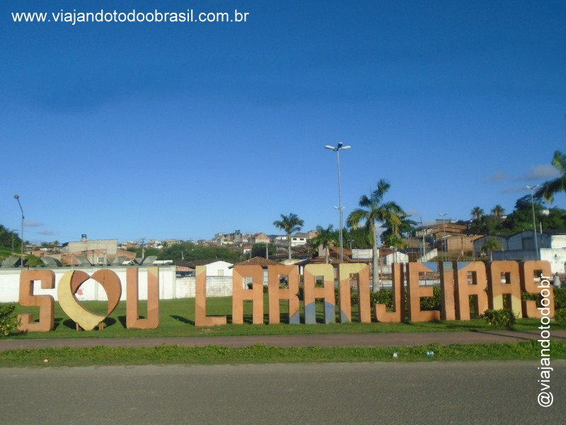

Laranjeiras
História
Depois que as tropas de Cristóvão de Barros arrasaram com as nações indígenas, por volta de 1590, muitos ‘colonos’ acabaram se fixando às margens do rio Cotinguiba. Essas terras pertenciam à Freguesia de Socorro. Naquela região, mais ou menos uma légua da sede, foi construído um pequeno porto e, por conta das inúmeras e frondosas laranjeiras à beira do rio, moradores e viajantes começaram a identificar o local como porto das laranjeiras.
O florescimento econômico atraiu para Laranjeiras comerciantes, médicos, advogados, professores e outros intelectuais. O município teve uma forte imprensa. Geralmente ligados a partido, associações culturais e à igreja, os jornais retratavam a vida na sede e defendia suas bandeiras. Os maiores exemplos são o "Monarchista Constitucional", o "Triunfo", seguido de o "Guarany", o "Observador", O Telégrafo" e a "Voz da Razão". Laranjeiras foi, sem dúvida alguma, de 1841 a 1851 o maior centro cultural e artístico de Sergipe. É chamada a Atenas sergipana. Em 4 de maio de 1848, Laranjeiras passa efetivamente à categoria de cidade.
Estando no coração do Vale do Cotinguiba, Laranjeiras foi palco de tensões sociais e raciais. Duas grandes revoltas urbanas de escravos negros e mulatos livres foram registradas em 1835 e 1837. Os escravos fugitivos organizavam-se em mocambos e quilombos nas matas dos próprios engenhos. Os mais famosos líderes negros foram João Mulungu, Laureano, Dionísio e Saturnino. Para recuperar seus escravos, muito senhores chegavam a colocar anúncios nos jornais. O grande ano de fugas de escravos foi 1867. Ficam célebres alguns atos, como o enforcamento dos escravos Crispim e Malaquias, que eram acusados de assassinar seus senhores brancos; a fuga do escravo João Mulungu do Engenho Flor da Roda em 1868, sendo que muito tempo depois foi capturado e enforcado. Mas as ações cruéis dos senhores com os escravos provocou protestos da população até a chegada da abolição.
fonte: https://laranjeiras.se.gov.br/historia-do-municipioPontos Turísticos
Igreja Nossa Senhora da Conceição da Comandaroba
Em 1731, às margens do rio Cotinguiba, os jesuítas inauguraram sua segunda residência em Laranjeiras; uma construção mais simples do que a primeira. O templo apresenta as características das demais construções jesuíticas no Nordeste. No seu pórtico, de pedra calcária, e no arco cruzeiro estão gravados monogramas que confirmam suas origens e da sua padroeira, a Virgem da Conceição.
Provavelmente uma das últimas construções dos padres da Companhia de Jesus em terras sergipanas, que, em 1759, foram expulsos da Colônia, tendo seus bens confiscados pelo governo português. A edificação, tombada pelo IPHAN, é um dos monumentos históricos de maior valor no Estado. Localização: Zona rural, a aproximadamente 1 km do centro da cidade.
Dados Gerais de acordo com o IBGE
| Prefeito (a) | José de Araujo Leite Neto |
| Vice-Prefeito (a) | Janio Dias |
| Site do município | https://laranjeiras.se.gov.br/ |
| Área territorial | 162,273 km² |
| População estimada | 30.327 pessoas |
| Densidade demográfica | 165,78 hab/km² |
| IDHM | 0,642 |
| PIB per capita | R$ 27.147,97 |